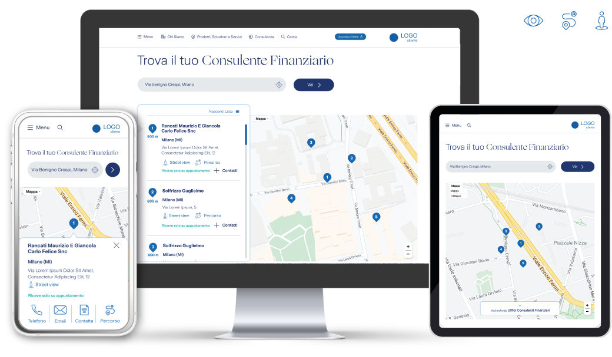
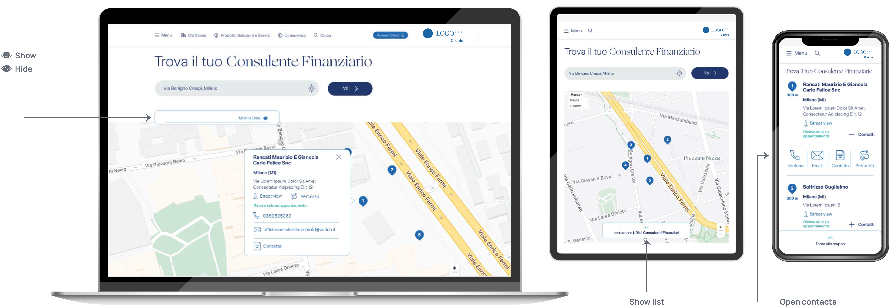
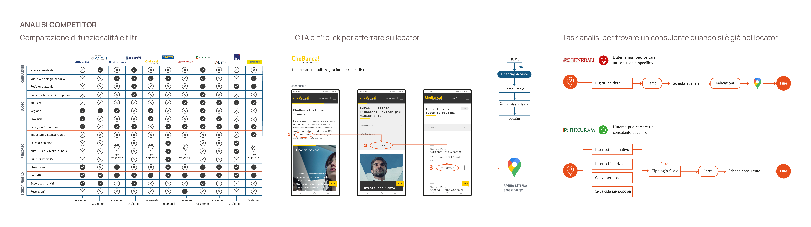
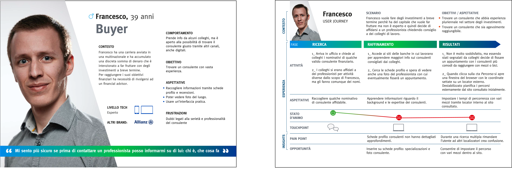
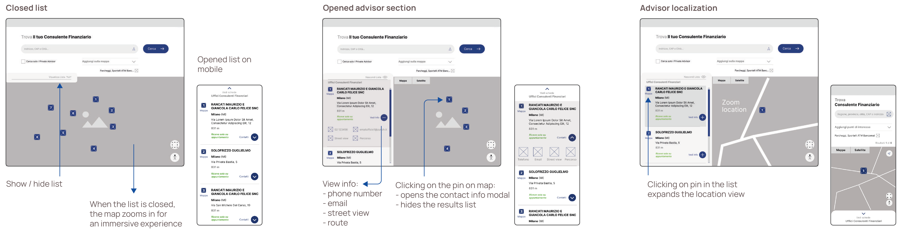
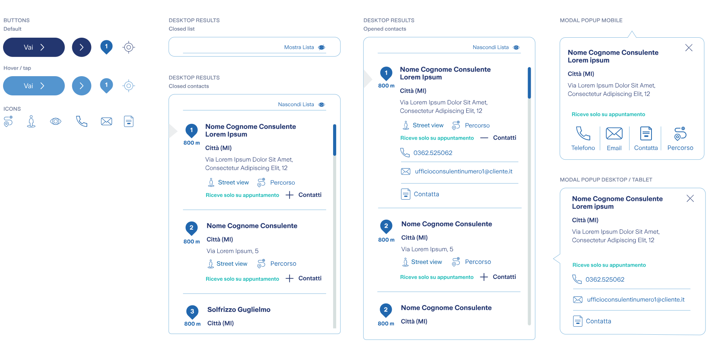

Obiettivo: Trasformare il sito nel primo punto di contatto con un consulente, con un locator che permette di trovare e raggiungere il professionista giusto in un click.
Ruolo: End-to-end Product Designer (UX/UI).
Timeline: 2 mesi.

L'azienda aveva centinaia di consulenti sul territorio nazionale
e quasi nessun modo per un potenziale cliente di raggiungerne uno.
Se volevi un nominativo, dovevi andare in una filiale, chiamare il servizio
clienti o aprire Google Maps, dove insieme all'azienda comparivano anche i suoi competitor.
Ogni ricerca persa era un contatto mai nato. Ogni chiamata per avere una lista
era un operatore del supporto che faceva il lavoro che avrebbe dovuto fare il sito.
Un locator integrato nel sito aziendale, dove chiunque può trovare e contattare il consulente finanziario più vicino in un click.
Nei 6 mesi successivi al lancio, le richieste al supporto clienti sui consulenti sul territorio sono calate del 35%.
"Cerca consulenti" nel menu principale
Un accesso diretto al locator, così nessuno deve cercare su Map, dove oltre all'azienda compaiono anche i competitor.
Utenti mantenuti nel sito
I potenziali clienti completano tutta la ricerca sulla piattaforma, con Street View integrata.
Google Maps interviene solo per il "Percorso", una volta scelto il consulente.
Solo quello che il team poteva mantenere
Gli utenti chiedevano di più, ma ho concentrato il primo rilascio su ciò che il team
poteva costruire e mantenere nel tempo. Più avanti spiego il perché.

Ero l'unica designer in un team di quattro persone: un project manager, due sviluppatori e io.
Sei settimane e un budget dedicato per rispondere a una domanda:
di cosa hanno davvero bisogno le persone per scegliere un consulente?
Ho eseguito un benchmark con metodi misti su 13 aziende, divise in competitor diretti, indiretti e comparabili di altri settori.
Ho notato due schemi ricorrenti:

Ho sottoposto un questionario a un target premium segmentato,
120 utenti italiani tra 35-70 anni che già investono tramite un consulente.
Le risposte hanno cambiato il brief:

La ricerca mi aveva dato tre leve per costruire fiducia: schede profilo dei consulenti, recensioni e foto delle sedi.
Ho progettato intorno a quelle, poi la fase di delivery ha complicato le cose.
La rete dei consulenti era ampia ma i dati non erano strutturati,
non c'erano contenuti omogenei per schede e recensioni e il team aveva risorse limitate per mantenerle.
Una bella scheda profilo con metà dei campi vuoti avrebbe danneggiato la fiducia invece di costruirla.
Così la domanda è cambiata in: "Quanto in fretta possiamo mettere il cliente in contatto con il consulente?"
Ho rimosso filtri, schede e recensioni dal primo rilascio e ho concentrato il lavoro su due cose:
un locator raggiungibile in un click su desktop e due su mobile, e un flusso di contatto che
funziona nel momento in cui l'utente trova il professionista giusto.

Il cliente aveva già un design system, quindi non si partiva da zero, l'ho esteso.
I nuovi componenti sono stati pensati per scalare su altri touchpoint:

La ricerca ha mostrato che schede profilo, recensioni e foto potrebbero aumentare la fiducia nella scelta.
Esclusi dal primo rilascio perché i dati sulla rete dei consulenti non erano ancora sufficientemente strutturati e coerenti.
La prossima iterazione potrà costruire su questa base.